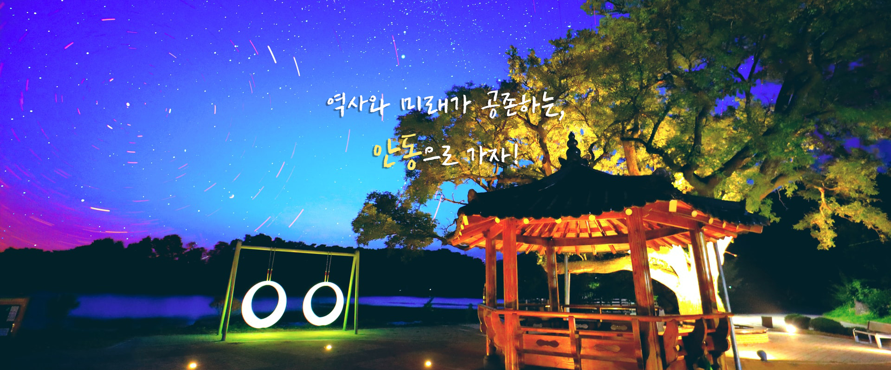
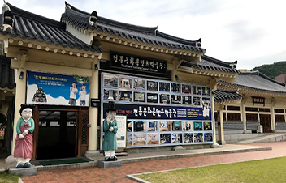
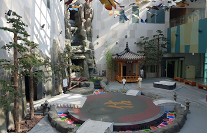
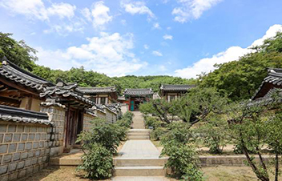
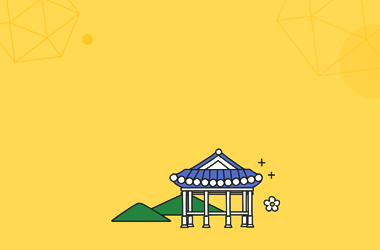

- 


-
유물 없이 디지털콘텐츠로만 채워진

국내 최초의 박물관안동시 서동문로 203
054-840-6511
자세히보기 -
낙동강을 감싸듯 하는 산세와 댐으로
이루어진 울타리 같은 지형안동시 상아동
054-821-0649
자세히보기 -
고려 건국에 공을 세운 삼태사
김선평, 권행, 장정필의
위패를 봉안하고 있는재사안동시 태사길 13
054-852-1969
자세히보기 -
안동의 주요한 관광자원으로 주목 받고 있는
안동민속박물관안동시 민속촌길 13
054-821-0649
자세히보기 -
한국 정신문화의 뿌리인 유교문화를 스토리

텔링화한 테마파크형 전시체험센터안동시 관광단지로 346-30
054-820-8800
자세히보기 -
자연암벽에 신체를 선으로 새기고
머리는 따로 올려놓은
전체 높이 12.38m의 거구의 불상경북 안동시 이천동 산2번지
054-820-8800
자세히보기 -
신라 문무왕 12년(672)에
의상대사의 제자인 능인스님께서 창건하신 사찰서후면 태장리 901
853-4181
자세히보기 -
퇴계 이황선생을 향사하는 도산서원
안동시 도산면 도산서원길 154
054-840-6576
자세히보기 -
조선시대의 대표적인 유교적 건축물로서,
류성룡과 그의 셋째아들 류진을 배향한 서원안동시 풍천면 병산길 386
054-858-5929
자세히보기 -
대대로 풍산류씨가 살아 오는 동성부락
별신굿탈놀이와 하회탈이 유명한 마을안동시 풍천면 하회남촌길 63
054-854-3669
자세히보기

안동체험여행
-
 월영교
월영교
-
 병산서원
병산서원
-
 만휴정
만휴정
-
 체화정
체화정
-
 하회마을
하회마을
-
 개목나루
개목나루
-
 안동백조마을
안동백조마을
-
 유교랜드
유교랜드
-
 온뜨레피움
온뜨레피움
-
 낙강물길공원
낙강물길공원
-
 월영야행
월영야행
-
 안동벚꽃축제
안동벚꽃축제
안동관광도우미
여러분들의 즐거운 안동여행을 위한 다양한 정보를 제공해드립니다.
-
문화해설사 예약
전문가 해설과 함께
재미 있는 문화유산을
소개합니다. -
스탬프 투어
신나는 스탬프투어!!
즐거운 이벤트에
참여해보세요. -

관광홍보물 신청
관광정보가 담긴
책자와 지도를
보내드립니다.